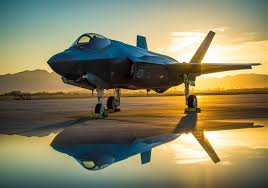
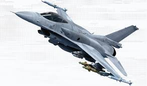
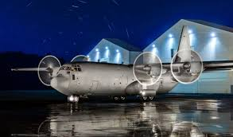
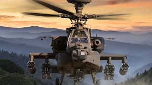
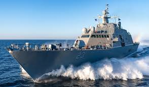
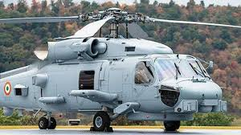

The Lockheed Martin Corporation is an American aerospace and defense manufacturer with worldwide interests. It was formed by the merger of Lockheed Corporation with Martin Marietta in March 1995. It is headquartered in North Bethesda, Maryland, in the Washington, D.C. area
Stock price: LMT (NYSE) $470.34 +9.40 (+2.04%) 31 May, 4:00 pm GMT-4 - Disclaimer Headquarters: Bethesda, Maryland, United States CEO: James D. Taiclet (15 Jun 2020–) CFO: Jesus Jay Malave COO: Frank A. St. John President: James D. Taiclet Founded: 1995
AIR SUPERIORITY
1.F-35
The Lockheed Martin F-35 Lightning II is an American family of single-seat, single-engine, stealth multirole combat aircraft designed for air superiority and strike missions; it also has electronic warfare and intelligence, surveillance, and reconnaissance capabilities.
2.F-21
The F-21 jets have been described as the most advanced F-16 variant ever built, incorporating futuristic avionics from the F-35 Lightning II and the F-22 Raptor. The F-21 is a variant of the F-16 Block 70, and its IAF-specific features were also unveiled at Aero-India 2023
3.A130 SUPERHERCULES
Always evolving, continually innovating, and ready for what’s next, the C-130J Super Hercules leads the charge, setting standards and shaping the future of tactical airlift missions. As the backbone of NATO's airlift superiority, it spans 26 operators across 22 nations, amplifying forces and ensuring interoperability. With nearly three million flight hours logged across the global fleet of 540+ C-130Js, invaluable insights gained from missions in every scenario equip the C-130J for what’s next. Unrivaled Versatility One aircraft, many missions ... no aircraft in history or operation today can match the C- 130J’s 18 certified, diverse, multi-mission capabilities. These capabilities are either built as a production variant or can be provided through a roll-on/roll-off configuration, providing additional resources with a short turn around installation time. Learn more about our production variant
APACHE ATTACT HELICOPTER
he Boeing AH-64 Apache (/əˈpætʃi/ ə-PATCH-ee) is an American twin-turboshaft attack helicopter with a tailwheel-type landing gear and a tandem cockpit for a crew of two. Nose-mounted sensors help acquire targets and provide night vision. It carries a 30 mm (1.18 in) M230 chain gun under its forward fuselage and four hardpoints on stub-wing pylons for armament and stores, typically AGM-114 Hellfire missiles and Hydra 70 rocket pods. Redundant systems help it survive combat damage. The Apache began as the Model 77 developed by Hughes Helicopters for the United States Army's Advanced Attack Helicopter program to replace the AH-1 Cobra. The prototype YAH-64 first flew on 30 September 1975. The U.S. Army selected the YAH-64 over the Bell YAH-63 in 1976, and later approved full production in 1982. After acquiring Hughes Helicopters in 1984, McDonnell Douglas continued AH-64 production and development. The helicopter was introduced to U.S. Army service in April 1986. The advanced AH-64D Apache Longbow was delivered to the Army in March 1997. Production has been continued by Boeing Defense, Space & Security. As of 2020, more than 2,400 AH-64s have been produced.[3]
1.DESTROYER WARSHIP
DDG 1000-class guided missile destroyers are warships that provide multi-mission offensive and defensive capabilities, including Long Range Precision Strike, Anti-Air Warfare (AAW), Anti-Submarine Warfare (ASW), and Anti-Surface Warfare (ASuW). The Zumwalt class can operate independently or as part of Carrier Strike Groups, Surface Action Groups, and Expeditionary Strike Groups. The ships’ stealth and ability creates a new level of battlespace complexity for potential adversaries. The Zumwalt class will also operate as a key enabler in the acceleration of new warfighting capabilities and rapid development and validation of operational tactics, techniques, and procedures. 00:52Video Player
2.MH 60 ROMEO ANTI SUBMARINE SCHOPPER
The MH-60R Seahawk helicopter brings transformational anti-submarine (ASW) and anti-surface warfare (ASuW) capabilities to navies around the world. Designed and built to U.S. Navy specifications, the ‘Romeo’ aircraft is rugged, powerful, and reliable. Whether operating from shore or ship, MH-60R operators can confidently prosecute the mission, and return home safely. The MH-60R aircraft is built on four decades of SEAHAWK learning and knowledge. Advanced digital sensors include the multi-mode radar, electronic support measures system, electro-optical/infrared camera, datalinks, aircraft survivability systems, dipping sonar and sonobuoys. The fully-integrated mission system processes sensor data to build a complete situational picture of the ocean surface and subsea domain. With actionable knowledge, the crew can track, target and engage ships or submarines effectively and efficiently. Weapons include torpedoes, air-to-ground missiles and rockets, and crew served guns. Constant upgrades to aircraft and sensors, and a best-in-class sustainment program are key to the MH-60R aircraft’s unparalleled mission capability, mission availability and flight readiness. Lockheed Martin’s Performance Based Logistics program for U.S. Navy MH-60R helicopters enables 95 percent flight readiness and availability — a rate unmatched by other maritime helicopters. The U.S. Navy’s MH-60R roadmap will maintain the Romeo’s operational edge to 2045 and beyonds.